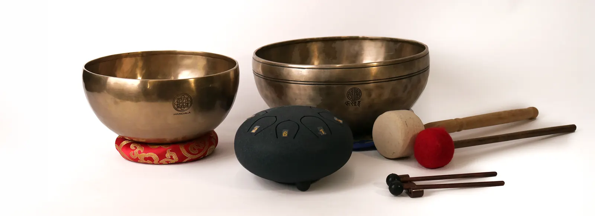

Eredetünk
Minden tárgynak van egy helye és egy keze
A Mandala tárgyai Nepál és India műhelyeiből érkeznek. Nem nagykereskedelmi katalógusból válogatunk, hanem onnan, ahol ezek a tárgyak ma is a mindennapok részei.
Nepál
A Katmandu-völgy műhelyei
Patan évszázadok óta a fémöntés és a szoborkészítés központja. Innen érkeznek hangtálaink, csengőink, tingsháink és réz szobraink.
A tibeti közösségek kézzel sodort, pálca nélküli füstölői, a mala láncok és az imazászlók szintén nepáli kézművesek munkái. A hangtálakat egyenként hallgatjuk meg, és megmérjük az alapfrekvenciájukat, mielőtt kiválasztjuk őket.

India
Réz, textil és illat
Moradabad a „réz városa”: szélcsengőink, mécsestartóink, kulacsaink és füstölőtartóink innen jönnek.
Rádzsasztán fővárosa, Jaipur a blokknyomott textilek és a kézműves ékszerek otthona – sálaink, ruháink és gyűrűink nagy része itt készül. Kézzel sodort füstölőinket dél-indiai családi manufaktúrák készítik.
Így dolgozunk
Az út a műhelytől hozzád
Kapcsolat
Hosszú távú kapcsolatot építünk kisebb műhelyekkel, ismerjük a kezeket, amelyek a tárgyakat készítik.
Válogatás
Egyenként választunk: a hangtálat meghallgatjuk, a textilt megfogjuk, a füstölőt meggyújtjuk.
Ellenőrzés
Budapesten minden darabot átnézünk, lemérünk, és pontos adatokkal töltünk fel.
Csomagolás
Gondosan, lehetőség szerint újrahasznosított anyagokkal csomagolunk – ajándékba kézzel írt kártyával.
Tisztelet
A szakrális tárgyakat jelentésükkel együtt adjuk tovább – ezért írjuk a magazint.
Átláthatóság
Minden terméknél megadjuk, honnan érkezik, miből készült, és hogyan érdemes használni.
Személyesség
Kérdezz bátran: segítünk kiválasztani a hozzád illő hangtálat vagy ajándékot.